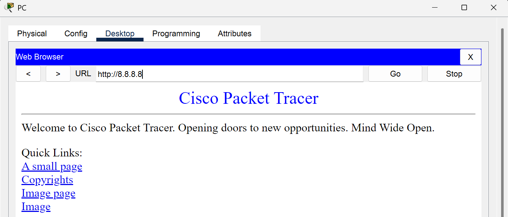

! Interface to DNS Server
enable
configure terminal
interface GigabitEthernet0/0
ip address 8.8.8.1 255.255.255.0
no shutdown
exit
! Interface to Router2
interface GigabitEthernet0/1
ip address 10.0.0.1 255.255.255.0
no shutdown
exit
! Default route to "Internet" (Router2)
ip route 0.0.0.0 0.0.0.0 10.0.0.2
! DNS settings
ip name-server 8.8.8.8
exit
write memory! Interface to Router1 (Outside NAT)
enable
configure terminal
interface GigabitEthernet0/0
ip address 10.0.0.2 255.255.255.0
ip nat outside
no shutdown
exit
! Interface to ASA (Inside NAT)
interface GigabitEthernet0/1
ip address 192.168.0.1 255.255.255.0
ip nat inside
no shutdown
exit
! NAT for Internal Traffic
access-list 1 permit 192.168.0.0 0.0.0.255
ip nat inside source list 1 interface GigabitEthernet0/0 overload
! Route to ASA’s Internal Network
ip route 192.168.1.0 255.255.255.0 192.168.0.2
exit
! DNS settings
ip name-server 8.8.8.8
exit
write memory! Outside Interface (to Router2)
enable
configure terminal
interface GigabitEthernet1/1
nameif outside
ip address 192.168.0.2 255.255.255.0
security-level 0
no shutdown
exit
! Inside Interface (to Switch)
interface GigabitEthernet1/2
nameif inside
ip address 192.168.1.1 255.255.255.0
security-level 100
no shutdown
exit
! Allow All Traffic (for testing)
access-list INSIDE_OUT extended permit ip any any
access-group INSIDE_OUT in interface inside
access-list OUTSIDE_IN extended permit ip any any
access-group OUTSIDE_IN in interface outside
! Default Route to Router2
route outside 0.0.0.0 0.0.0.0 192.168.0.1
exit
exit
write memoryenable
configure terminal
vlan 10
name PC_VLAN
exit
interface FastEthernet0/1
switchport access vlan 10
no shutdown
exit
interface GigabitEthernet0/1
switchport access vlan 10
no shutdown
exit
exit
write memoryThe PC resolves cisco.com to its IP via the DNS server (8.8.8.8).
Successful ping to cisco.com (4/4 packets received).
PC resolves and reaches cisco.com via the 8.8.8.8 DNS server.